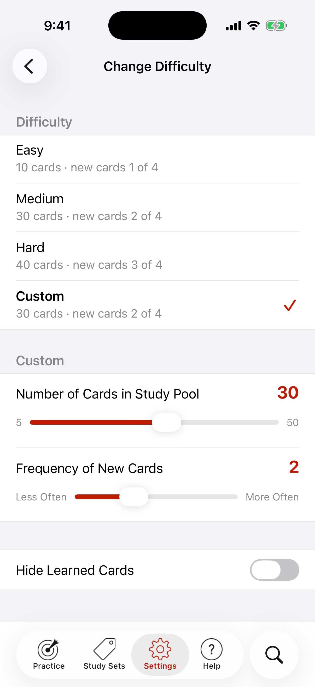

Learning Algorithm
Chinese Flash uses some very smart statistics to work out which cards you should study next. Cards you know well appear less often, cards you are having trouble with are shown more often. This approach is similar to the Leitner System and other spaced repetition systems (SRS).

When you study large sets, a pool of cards to study is selected. New cards are added as you learn the cards in the pool.
Unique to Chinese Flash, you can change the difficulty of practice under Settings. By changing the number of cards in the "studying pool", or the frequency new cards appear, studying gets easier or harder. You can also choose to exclude learned words from study using the "Hide Learned Cards" switch.
If this sounds confusing, don't worry! There are presets for easy, medium & hard so you don't have to worry about the math (worry about Chinese *grin*).
Easy keeps a small study pool and adds new cards less often. Hard uses a bigger pool and adds new cards more often. Choose Custom to set both sliders yourself.